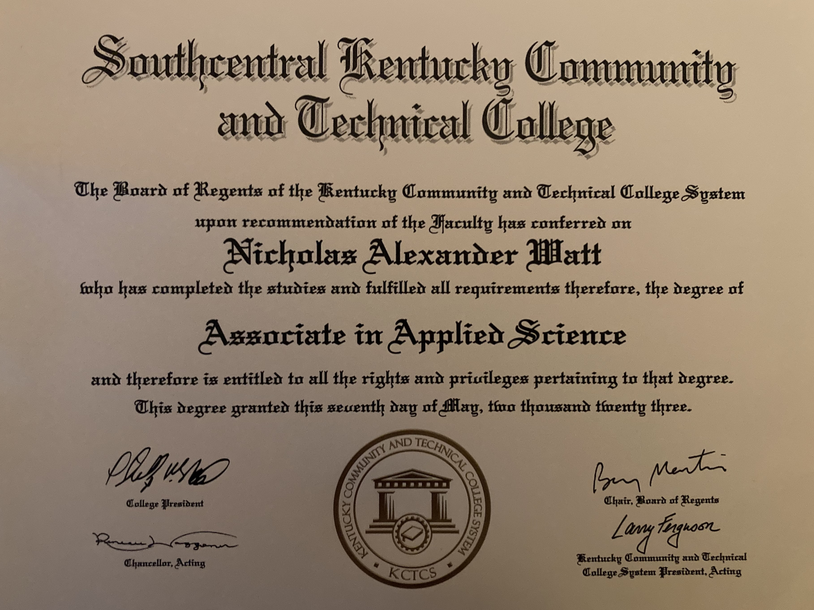
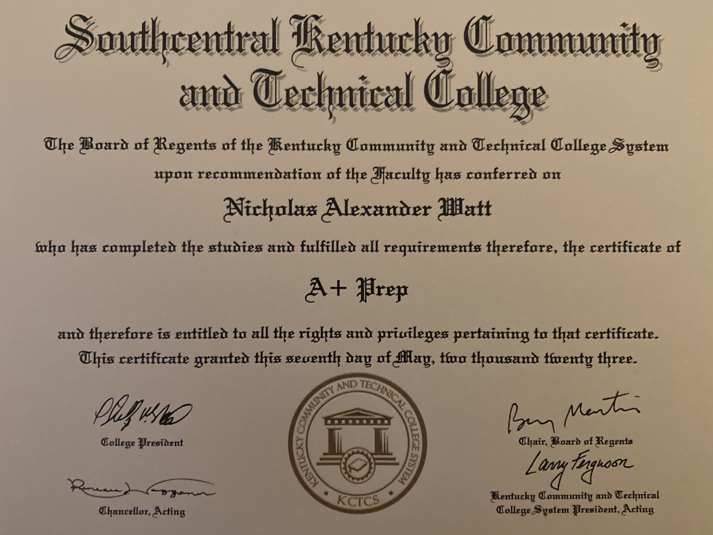
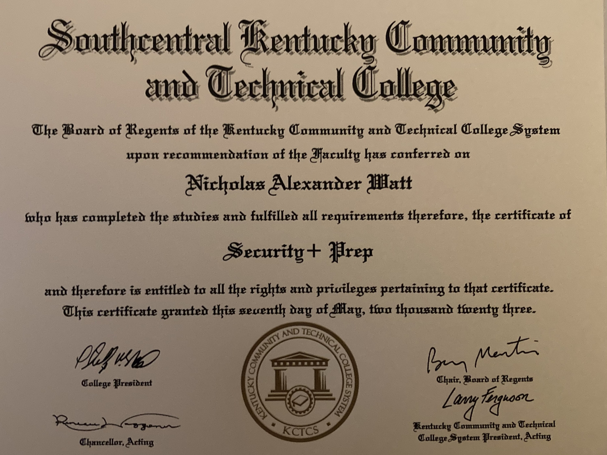

AAS in Computer and Information Technologies
As of the spring 2023 semester, I am proud to say I have graduated with my Computer and Information Technologies Associates' Degree from Southcentral Kentucky Community and Technical College. I'm very excited to earn this and continue my education.
AWS Cloud Practitioner Certification
As of May 5th, 2023; I've completed my AWS Cloud Practitioner training. This certification demonstrates that I understand the AWS Dashboard and products well enough to work with an AWS-integrated network.

NOCTI Workforce Competency Credential
During my final semester at SKYCTC, I completed the NOCTI exam. This certification demonstrates that I have a working knowledge of best international industry practices and strandards for CIT.

TestOut Certification
TestOut handles all kinds of computer related services. This TestOut certification proves I know how to build, troubleshoot, and fix a computer. I have a working knowledge of most office devices from printers to projectors. Most importantly, I know how to help you effeciently use whatever device you're working with.

A+ Prep
The CompTIA A+ Prep Certification attests to my proficiency in efficiently managing and remotely diagnosing issues related to prevalent software, hardware, and operating systems. I possess a solid understanding of emerging foundational technologies like cloud virtualization and computing. Furthermore, I have a proficient grasp of database management and scripting. Ultimately, this certification underscores my awareness of and adherence to optimal workplace practices.
Security+ Prep
The CompTIA Security+ Prep Certification highlights my expertise in key cybersecurity domains. It attests to my ability to detect and respond to threats effectively, manage secure network infrastructures, implement strong access controls, and apply cryptographic principles. I'm also well-versed in security governance, compliance, and fostering a security-conscious culture, all while prioritizing secure software development. This certification underscores my comprehensive knowledge, making me a trusted professional for safeguarding digital assets and data.
